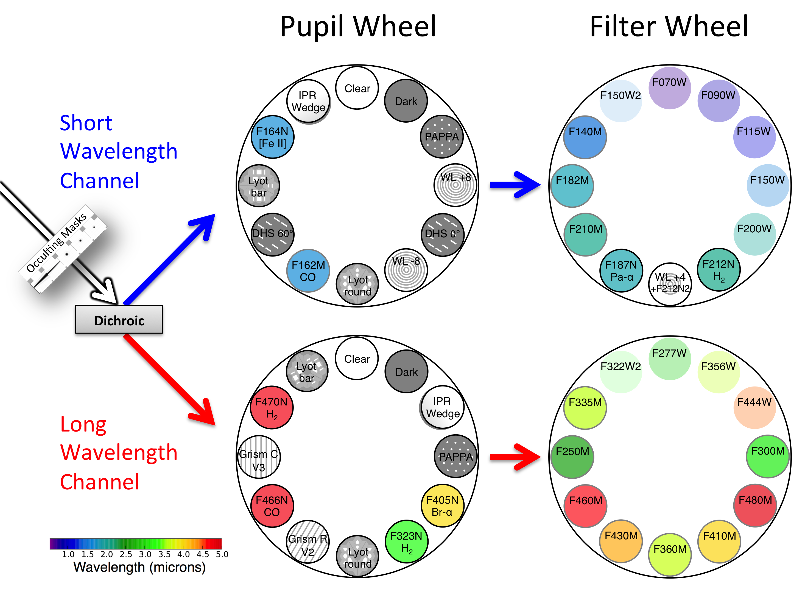
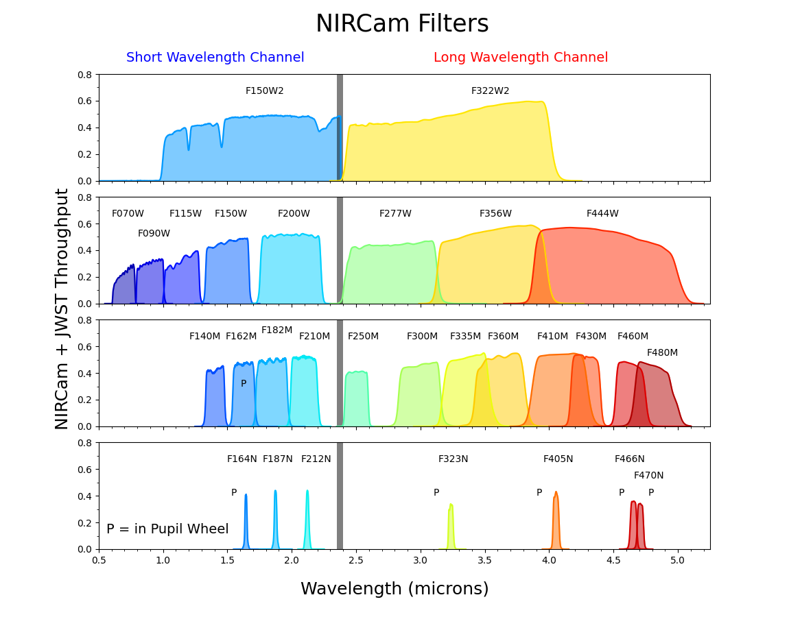
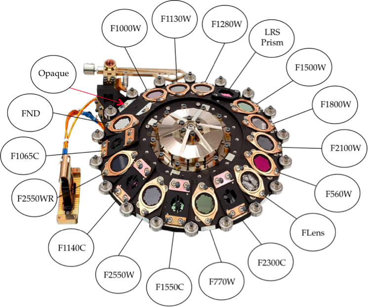
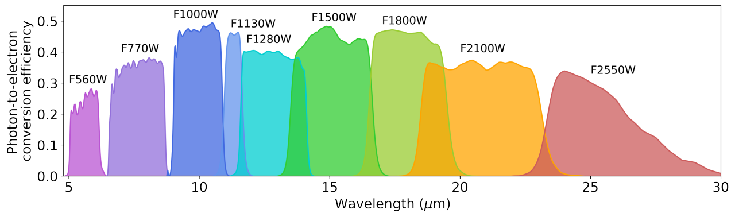
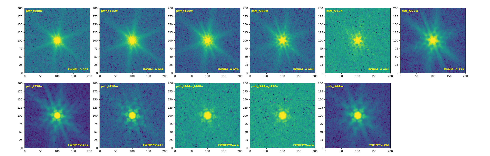
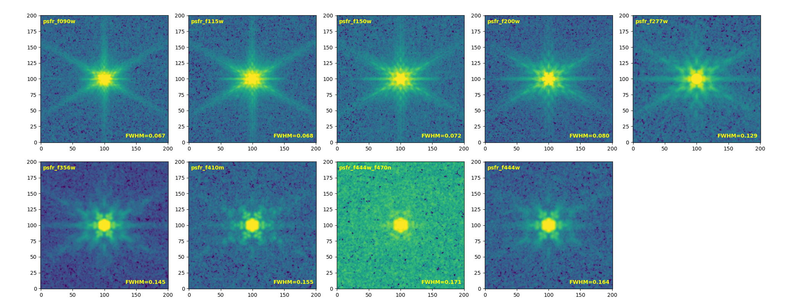
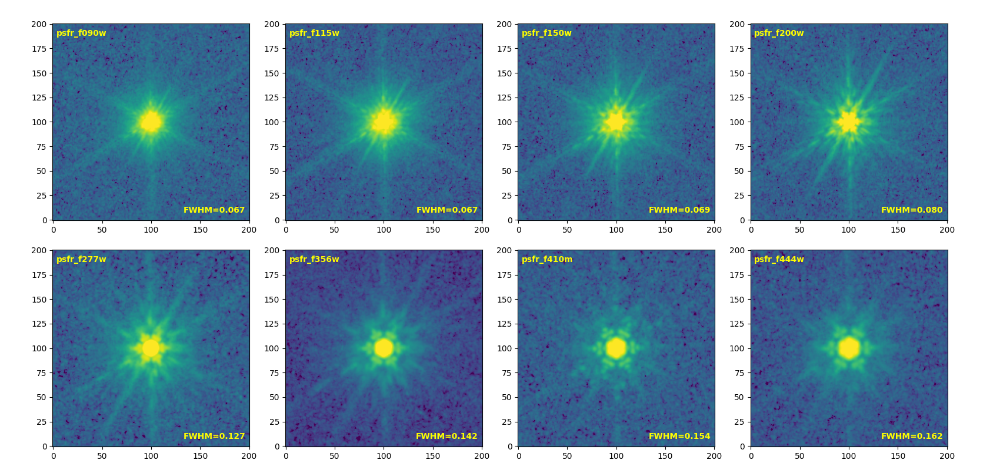
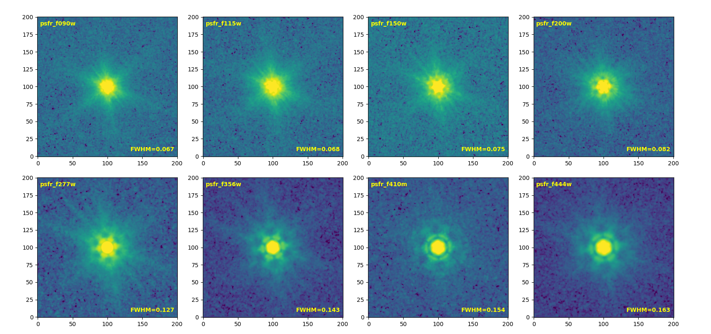

Filter¶
Filter Wheels and Throughputs¶
NIRCam¶
 
MIRI¶
 
Filter Wavelength¶
Filter ID |
λ_ref |
λ_eff |
λ_min |
λ_max |
|---|---|---|---|---|
HST/ACS_WFC.F435W |
4329.85 |
4341.62 |
3610.23 |
4883.77 |
HST/ACS_WFC.F606W |
5921.88 |
5809.26 |
4634.30 |
7180.10 |
HST/ACS_WFC.F775W |
7693.47 |
7652.44 |
6803.72 |
8631.82 |
HST/ACS_WFC.F814W |
8045.53 |
7973.39 |
6869.59 |
9632.01 |
HST/ACS_WFC.F850LP |
9031.48 |
9004.99 |
8007.01 |
10862.13 |
HST/WFC3_IR.F105W |
10550.25 |
10430.83 |
8955.24 |
12130.55 |
HST/WFC3_IR.F125W |
12486.07 |
12363.55 |
10853.22 |
14141.73 |
HST/WFC3_IR.F140W |
13923.21 |
13734.66 |
11864.94 |
16133.14 |
HST/WFC3_IR.F160W |
15370.34 |
15278.47 |
13857.70 |
17003.09 |
JWST/NIRCam.F070W |
7039.12 |
6988.43 |
6048.20 |
7927.07 |
JWST/NIRCam.F090W |
9021.53 |
8984.98 |
7881.88 |
10243.08 |
JWST/NIRCam.F115W |
11542.61 |
11433.62 |
9975.60 |
13058.40 |
JWST/NIRCam.F150W |
15007.44 |
14872.56 |
13041.19 |
16948.89 |
JWST/NIRCam.F200W |
19886.48 |
19680.41 |
17249.08 |
22596.64 |
JWST/NIRCam.F277W |
27617.40 |
27278.58 |
23673.12 |
32203.22 |
JWST/NIRCam.F356W |
35683.62 |
35287.04 |
30732.91 |
40801.26 |
JWST/NIRCam.F410M |
40822.38 |
40723.18 |
37763.56 |
44048.41 |
JWST/NIRCam.F444W |
44043.15 |
43504.26 |
38039.57 |
50995.50 |
JWST/MIRI.F560W |
56352.56 |
55870.25 |
48944.36 |
64279.58 |
JWST/MIRI.F770W |
76393.34 |
75224.94 |
64802.79 |
88382.09 |
JWST/MIRI.F1000W |
99531.16 |
98793.45 |
87645.92 |
111053.33 |
JWST/MIRI.F1280W |
128101.38 |
127059.68 |
112674.80 |
143435.71 |
JWST/MIRI.F1500W |
150635.06 |
149257.07 |
131345.04 |
171580.84 |
JWST/MIRI.F1800W |
179837.22 |
178734.17 |
160441.28 |
203000.78 |
JWST/MIRI.F2100W |
207950.05 |
205601.06 |
179077.84 |
244780.51 |
JWST/MIRI.F2550W |
253640.02 |
251515.99 |
223494.34 |
299940.00 |
PSF Empirical FWHM¶
HST (from Guo+ 2013)¶
Band |
F435W |
F606W |
F775W |
F814W |
F850LP |
F098M |
F105W |
F125W |
F160W |
|---|---|---|---|---|---|---|---|---|---|
FWHM (arcsec) |
0.08 |
0.08 |
0.08 |
0.09 |
0.09 |
0.13 |
0.15 |
0.16 |
0.17 |
JWST¶
Stacked PSF¶

Band |
F090W |
F115W |
F150W |
F200W |
F277W |
F356W |
F410M |
F444W |
|---|---|---|---|---|---|---|---|---|
FWHM (arcsec) |
0.066 |
0.069 |
0.073 |
0.081 |
0.129 |
0.143 |
0.156 |
0.163 |

Band |
F090W |
F115W |
F150W |
F200W |
F277W |
F356W |
F410M |
F444W |
|---|---|---|---|---|---|---|---|---|
FWHM (arcsec) |
0.066 |
0.068 |
0.072 |
0.081 |
0.129 |
0.144 |
0.155 |
0.165 |

Band |
F090W |
F115W |
F150W |
F200W |
F277W |
F356W |
F410M |
F444W |
|---|---|---|---|---|---|---|---|---|
FWHM (arcsec) |
0.067 |
0.067 |
0.069 |
0.080 |
0.127 |
0.142 |
0.154 |
0.162 |

Band |
F090W |
F115W |
F150W |
F200W |
F277W |
F356W |
F410M |
F444W |
|---|---|---|---|---|---|---|---|---|
FWHM (arcsec) |
0.067 |
0.068 |
0.075 |
0.082 |
0.127 |
0.143 |
0.154 |
0.163 |
From JWST Documents¶
Band |
F560W |
F770W |
F1000W |
F1130W |
F1280W |
F1500W |
F1800W |
F2100W |
F2550W |
|---|---|---|---|---|---|---|---|---|---|
FWHM (arcsec) |
0.207 |
0.269 |
0.328 |
0.375 |
0.420 |
0.488 |
0.591 |
0.674 |
0.803 |
Zero point (AB mag)¶
HST (from HLF)¶
Band |
zero point |
|---|---|
F275W |
24.13 |
F336W |
24.67 |
F435W |
25.68 |
F606W |
26.51 |
F775W |
25.69 |
F814W |
25.94 |
F850LP |
24.87 |
F105W |
26.27 |
F125W |
26.23 |
F140W |
26.45 |
F160W |
25.94 |
NIRCAM¶
28.08652 (for 0.03”/pixel)
MIRI¶
28.08652 (for 0.03”/pixel)
25.70091 (for 0.09”/pixel)